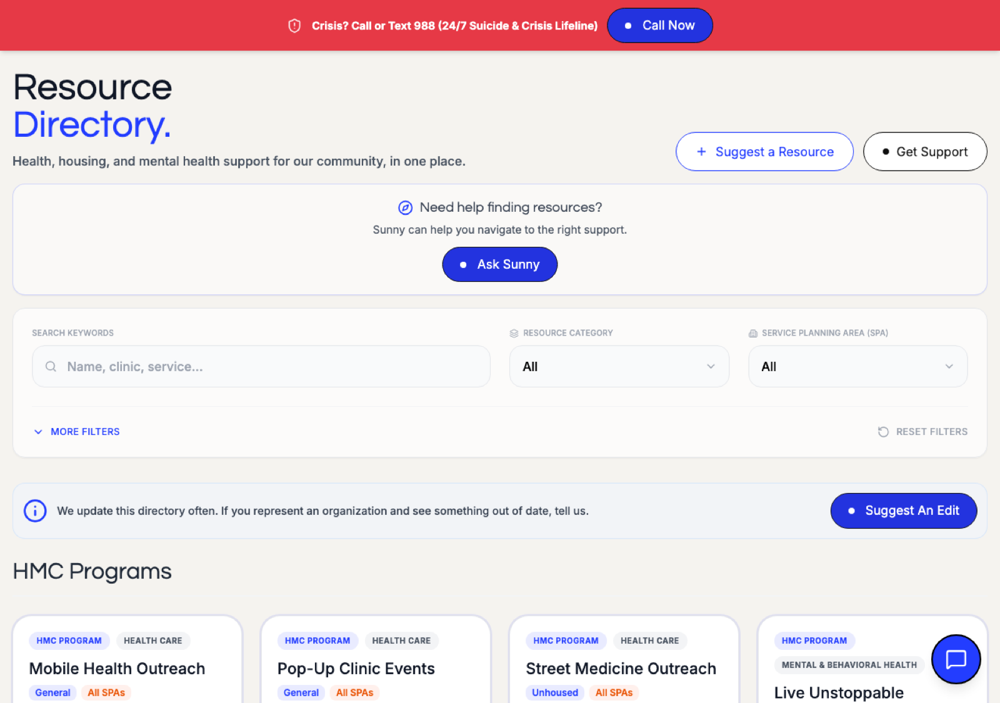
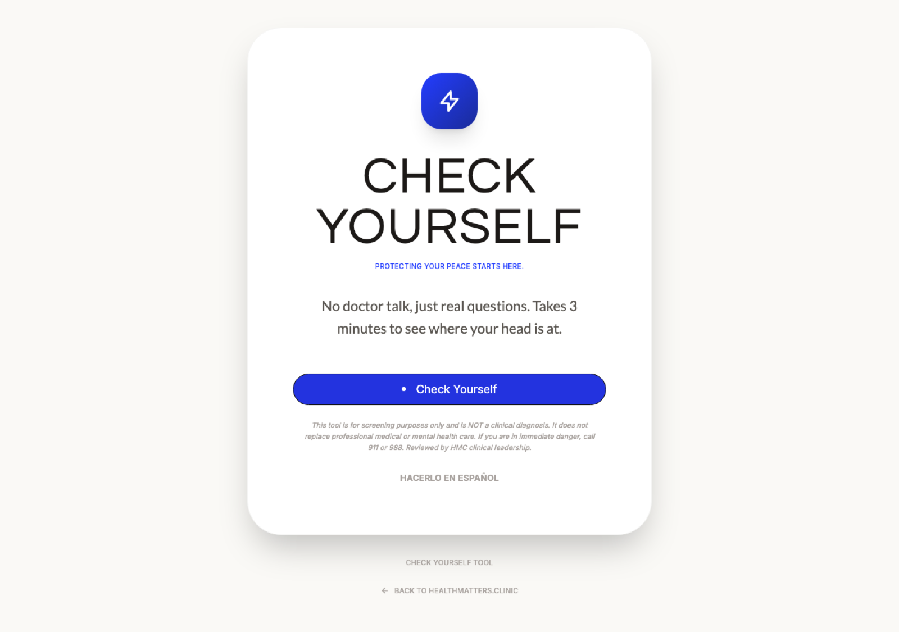
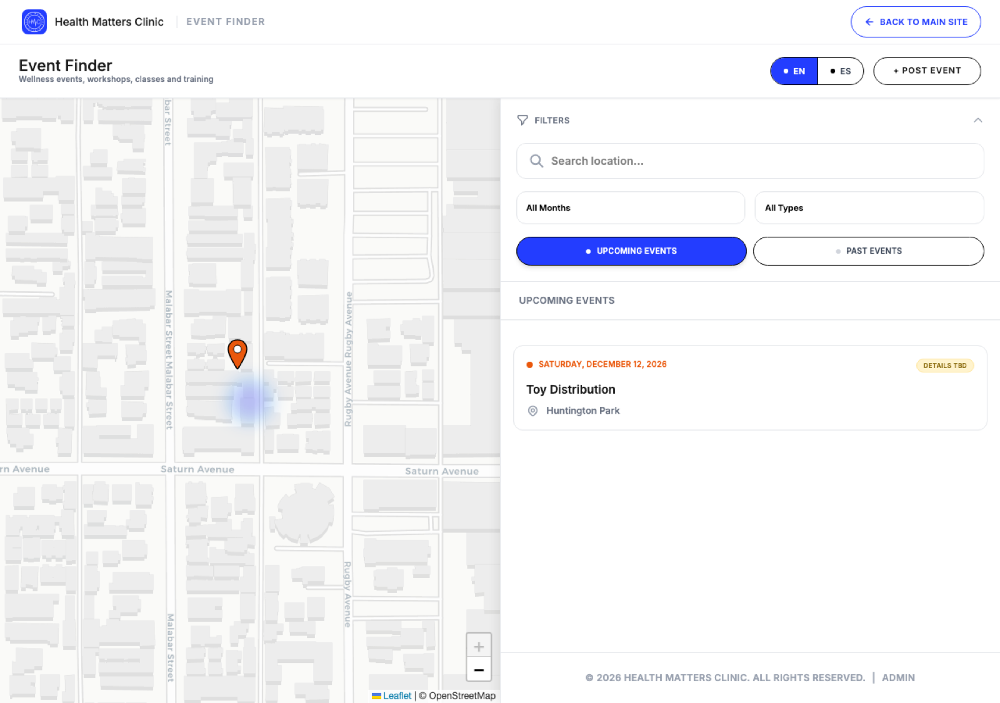
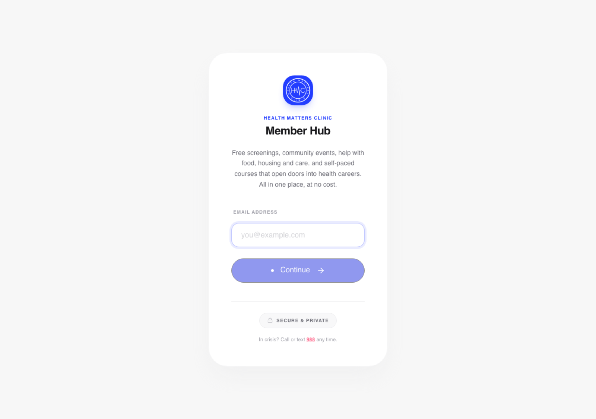
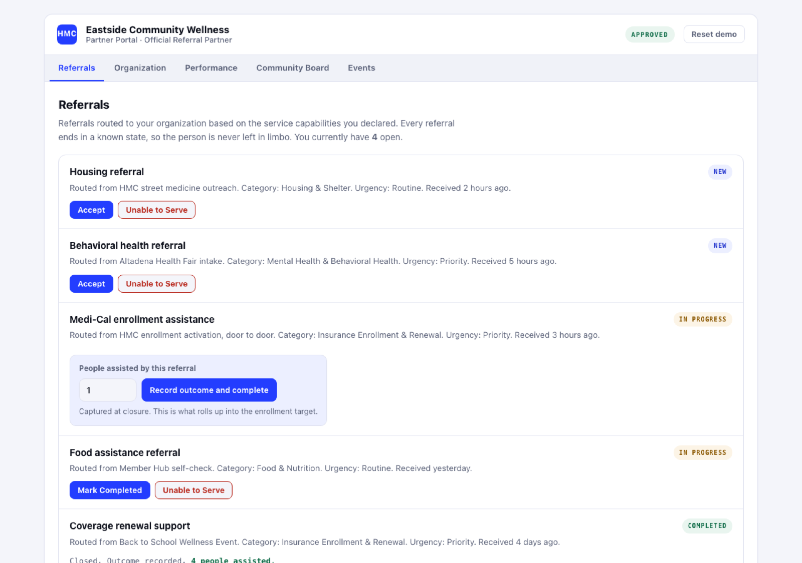

Health Matters Clinic presents
HMC OS™
Your next step
starts here.
Whether you need support, want to take better care of yourself, are ready to get involved, or want to build something bigger with your organization, HMC OS™ helps you find your way forward.
Start with what you need. Discover what comes next.
Start with what you need.
Discover what comes next.
What mattersto you?
What matters to you? Choose where to start.
Find support.
Resource Directory
When you need help, knowing where to start matters.

Find what you need.
When you need it.
Check in.
CheckYourself™
Sometimes the first step is understanding what you're feeling.

Here's what your answers
may be telling you.
Find your Peace
EventFinder™
Find your peace, your community, your purpose.Screenings, workshops, classes, walks, and ways to take part, all in one feed.

- All months
- All types
- Upcoming
- Map
Find the event for you.
One door.
Member Hub
Everything on this page that is open to the public, behind a single sign in. An email address gets you in.

No application.
No cost.
Build together.
Partner Portal
Referrals arrive matched to the services your organization declared. Accept them, record what happened, and publish your events to the whole county from the same screen.

Work better together.
What you need
is connected to what comes next.
HMC OS™
One connected platform for finding support, taking care of yourself, getting involved, helping others, and building stronger communities.